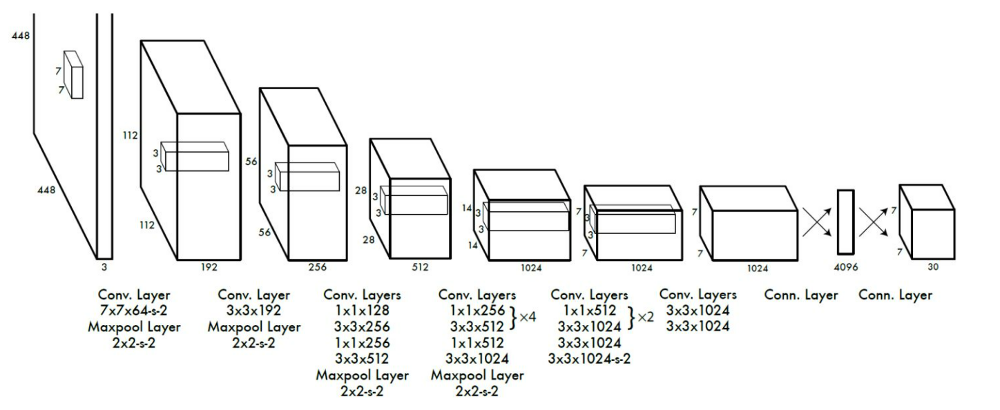

YOLO
YOLO
YOLOv1
yolo是one-stage的检测方法，Yolo检测网络包括24个卷积层和两个全连接层，卷积层用来提取特征，全连接层用来预测图像位置和类别概率
设计理念
Yolo将图片分成S * S个格子，如果某个物体的中心位置坐标落在某个格子，那么这个格子就负责检测出这个物体，每个格子会输出B个bounding box的信息以及C个类别的概率，每个bounding box信息包含了5个值，(x, y, w, h) 以及confidence，(x, y) 表示bounding box的中心坐标，(w, h) 是bounding box的宽和高，confidence反映了bounding box是否包含目标物体以及物体位置的准确性，计算如下：
如果包含物体 Pr(object) = 1，否则为 0，IOU为bounding box 与真实物体区域的交并比
所以，YOLO全连接层最终的输出维度为S * S * (B * 5 + C)，YOLO论文中，作者训练采用的输入图像分辨率是448x448，S=7，B=2；采用VOC 20类标注物体作为训练数据，C=20。因此输出向量为77(20 + 2*5)=1470维
[^虽然每个格子可以预测B个bounding box，但是最终只选择只选择IOU最高的bounding box作为物体检测输出，即每个格子最多只预测出一个物体。当物体占画面比例较小，如图像中包含畜群或鸟群时，每个格子包含多个物体，但却只能检测出其中一个。这是YOLO方法的一个缺陷]:
网络结构
Yolo采用卷积网络来提取特征，然后使用全连接层来得到预测值。网络结构参考GooLeNet模型，包含24个卷积层和2个全连接层，如图所示。对于卷积层，主要使用1x1卷积来做channle reduction，然后紧跟3x3卷积。对于卷积层和全连接层，采用Leaky ReLU激活函数
网络训练
在ImageNet数据集上进行预训练，采用YOLO模型里面的前20个卷积层+average pool层+ fc层，训练图像分辨率resize到224*224
用预训练得到的前20个卷积层网络参数来初始化YOLO模型前20个卷积层的网络参数，加上随机初始化的4个卷积层和2个全连接层，用VOC 20类标注数据进行YOLO模型训练。为提高图像精度，在训练检测模型时，将输入图像分辨率resize到448x448
YOLO的损失函数：
缺点
首先Yolo各个单元格仅仅预测两个边界框，而且属于一个类别。对于小物体，Yolo的表现会不如人意。这方面的改进可以看SSD，其采用多尺度单元格。也可以看Faster R-CNN，其采用了anchor boxes。Yolo对于在物体的宽高比方面泛化率低，就是无法定位不寻常比例的物体。当然Yolo的定位不准确也是很大的问题
YOLOv2
https://zhuanlan.zhihu.com/p/35325884
YOLOv2的改进策略
Batch Normalization
Batch Normalization可以提升模型收敛速度，而且可以起到一定正则化效果，降低模型的过拟合。在YOLOv2中，每个卷积层后面都添加了Batch Normalization层，并且不再使用droput。使用Batch Normalization后，YOLOv2的mAP提升了2.4%
High Resolution Classifier
$$
224
$$
目前大部分的检测模型都会在先在ImageNet分类数据集上预训练模型的主体部分（CNN特征提取器），由于历史原因，ImageNet分类模型基本采用大小为 $ 224 \times 224 $ 的图片作为输入，分辨率相对较低，不利于检测模型。所以YOLOv1在采用 分类模型预训练后，将分辨率增加至
，并使用这个高分辨率在检测数据集上finetune。但是直接切换分辨率，检测模型可能难以快速适应高分辨率。所以YOLOv2增加了在ImageNet数据集上使用
输入来finetune分类网络这一中间过程（10 epochs），这可以使得模型在检测数据集上finetune之前已经适用高分辨率输入。使用高分辨率分类器后，YOLOv2的mAP提升了约4%
Convolutional With Anchor Boxes
在YOLOv1中，输入图片最终被划分为 网格，每个单元格预测2个边界框。YOLOv1最后采用的是全连接层直接对边界框进行预测，其中边界框的宽与高是相对整张图片大小的，而由于各个图片中存在不同尺度和长宽比（scales and ratios）的物体，YOLOv1在训练过程中学习适应不同物体的形状是比较困难的，这也导致YOLOv1在精确定位方面表现较差。YOLOv2借鉴了Faster R-CNN中RPN网络的先验框（anchor boxes，prior boxes，SSD也采用了先验框）策略。RPN对CNN特征提取器得到的特征图（feature map）进行卷积来预测每个位置的边界框以及置信度（是否含有物体），并且各个位置设置不同尺度和比例的先验框，所以RPN预测的是边界框相对于先验框的offsets值（其实是transform值，详细见Faster R_CNN论文），采用先验框使得模型更容易学习。所以YOLOv2移除了YOLOv1中的全连接层而采用了卷积和anchor boxes来预测边界框。为了使检测所用的特征图分辨率更高，移除其中的一个pool层。在检测模型中，YOLOv2不是采用
图片作为输入，而是采用
大小。因为YOLOv2模型下采样的总步长为
，对于
大小的图片，最终得到的特征图大小为
，维度是奇数，这样特征图恰好只有一个中心位置。对于一些大物体，它们中心点往往落入图片中心位置，此时使用特征图的一个中心点去预测这些物体的边界框相对容易些。所以在YOLOv2设计中要保证最终的特征图有奇数个位置。对于YOLOv1，每个cell都预测2个boxes，每个boxes包含5个值：
，前4个值是边界框位置与大小，最后一个值是置信度（confidence scores，包含两部分：含有物体的概率以及预测框与ground truth的IOU）。但是每个cell只预测一套分类概率值（class predictions，其实是置信度下的条件概率值）,供2个boxes共享。YOLOv2使用了anchor boxes之后，每个位置的各个anchor box都单独预测一套分类概率值，这和SSD比较类似（但SSD没有预测置信度，而是把background作为一个类别来处理）。
使用anchor boxes之后，YOLOv2的mAP有稍微下降（这里下降的原因，我猜想是YOLOv2虽然使用了anchor boxes，但是依然采用YOLOv1的训练方法）。YOLOv1只能预测98个边界框（ ），而YOLOv2使用anchor boxes之后可以预测上千个边界框（
）。所以使用anchor boxes之后，YOLOv2的召回率大大提升，由原来的81%升至88%。
YOLOv2和SSD这两个one-stage模型与RPN网络本质上无异，只不过RPN不做类别的预测，只是简单地区分物体与背景。在two-stage方法中，RPN起到的作用是给出region proposals，其实就是作出粗糙的检测，所以另外增加了一个stage，即采用R-CNN网络来进一步提升检测的准确度（包括给出类别预测）。而对于one-stage方法，它们想要一步到位，直接采用“RPN”网络作出精确的预测，要因此要在网络设计上做很多的tricks。YOLOv2的一大创新是采用Multi-Scale Training策略，这样同一个模型其实就可以适应多种大小的图片了
YOLOv3
YOLO3主要的改进有：调整了网络结构；利用多尺度特征进行对象检测；对象分类用Logistic取代了softmax
网络
Darknet53，采用简化的residual block 取代了原来 1×1 和 3×3的block; (其实就是加了一个shortcut，也是网络加深必然所要采取的手段)。这和上一点是有关系的，v2的darknet-19变成了v3的darknet-53，为啥呢？就是需要上采样啊，卷积层的数量自然就多了，另外作者还是用了一连串的33、11卷积，33的卷积增加channel，而11的卷积在于压缩3*3卷积后的特征表示
darknet-53借用了resnet的思想，在网络中加入了残差模块，这样有利于解决深层次网络的梯度问题，每个残差模块由两个卷积层和一个shortcut connections,
1,2,8,8,4代表有几个*重复的*残差模块，整个v3结构里面，没有池化层和全连接层，网络的下采样是通过设置卷积的stride为2来达到的，每当通过这个卷积层之后，图像的尺寸就会减少一半，
分类损失
在YOLOv3中，每个框用多标签分类来预测边界框可能包含的类。该算法将v2中的softmax替换成了逻辑回归loss，在训练过程中使用二值交叉熵损失来进行类别预测。对于重叠的标签，多标签方法可以更好的模拟数据
多尺度检测
YOLOv3采用多个尺度融合的方式做预测。原来YOLOv2中有一个层叫：passthrough layer，假设最后提取的特征图尺度是1313，那么这个层的作用就是将前面一层的2626的特征图和本层1313的特征图进行连接，有点像ResNet。这样的操作是为了加强YOLO算法对小目标检测的精度。在YOLOv3中，作者采用了类似与FPN的上采样和融合做法（最后融合了3个尺度，其他2个尺度分别是2626和52*52），在多给尺度的特征图上做预测，对于小目标的提升效果还是非常明显的。虽然在YOLOv3中每个网格预测3个边界框，比v2中的5个要少，但v3采用了多个尺度的特征融合，所以边界框的数量也比之前多很多
对于多尺度检测来说，采用多个尺度进行预测，具体形式是在网络预测的最后某些层进行上采样拼接的操作来达到；对于分辨率对预测的影响如下解释：
分辨率信息直接反映的就是构成object的像素的数量。一个object，像素数量越多，它对object的细节表现就越丰富越具体，也就是说分辨率信息越丰富。这也就是为什么大尺度feature map提供的是分辨率信息了。语义信息在目标检测中指的是让object区分于背景的信息，即语义信息是让你知道这个是object，其余是背景。在不同类别中语义信息并不需要很多细节信息，分辨率信息大，反而会降低语义信息，因此小尺度feature map在提供必要的分辨率信息下语义信息会提供的更好。(而对于小目标，小尺度feature map无法提供必要的分辨率信息，所以还需结合大尺度的feature map)